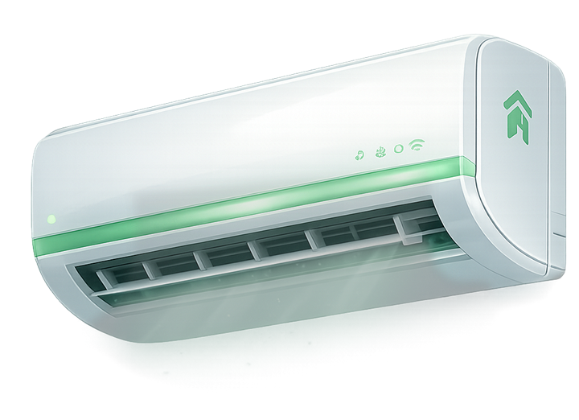
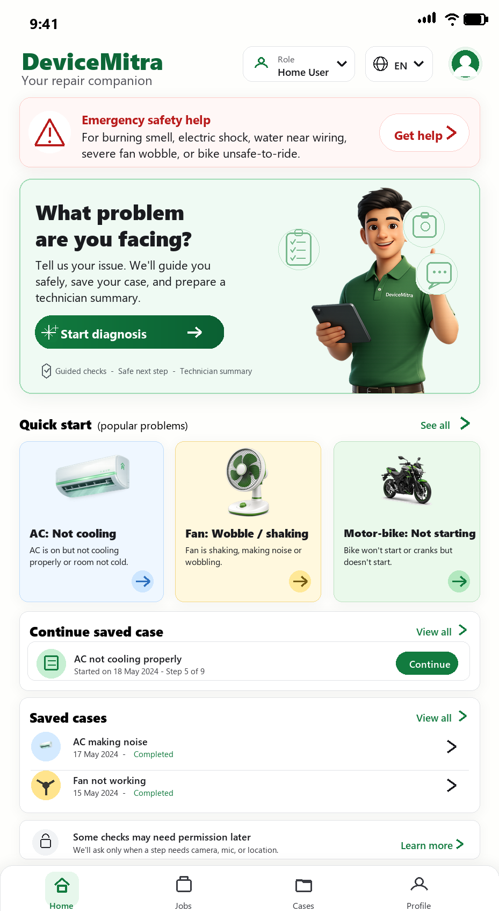
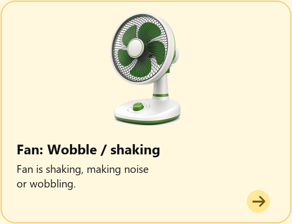
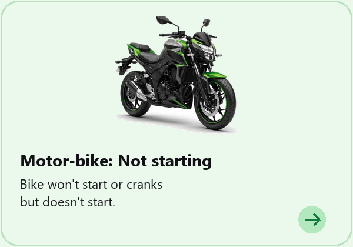

Air conditioners
Filter, outdoor unit, wiring, display codes, water leakage, cooling faults, and MCB trips.
AC MCB trip guideAI-assisted diagnosis for AC, fan and motor bike
DeviceMitra AI helps users collect device evidence and turn it into an AI-assisted diagnosis report, repair guidance, troubleshooting tools list, and an S0-S3 safety-aware next step.
Early-access product explanation. DeviceMitra supports repair decisions and technician handoff; it does not replace physical inspection by a qualified technician, electrician, or mechanic.

Built around real device evidence
DeviceMitra asks for the right observations by device type, so users capture the evidence that actually changes the diagnosis.

Filter, outdoor unit, wiring, display codes, water leakage, cooling faults, and MCB trips.
AC MCB trip guide
Wobble, noise, wiring, capacitor symptoms, loose mounts, blades, and regulator clues.
Fan humming guide
Not starting, warning lights, fuel leaks, brakes, tyres, battery, chain, and ride safety.
Bike self-start guideWhat DeviceMitra AI generates
DeviceMitra AI is designed to convert device symptoms, photos, safety checks, and answers into an AI-assisted diagnosis report, repair guidance, and troubleshooting tools list.
Sample only. A real report depends on the evidence provided and may conclude that more inspection is needed.
AI Diagnosis Report
In early access, the app is designed to analyze the complaint, photos, safety signals, and answers to prepare a report with possible fault categories, evidence, and what still needs checking.
S0-S3 Safety Classification
The report communicates caution, operating limits, and stop conditions so a likely fault never becomes a reason to take an unsafe action.
AI Repair Guidance
Once a possible fault direction is identified, DeviceMitra AI is designed to generate guidance that separates safe observations from technician-only work.
AI Tools List
DeviceMitra AI is designed to prepare a tools and materials list for the possible fault so users and technicians know what may be required before troubleshooting.
Illustrative report preview
The public site shows educational examples. A real early-access report depends on the user's device, symptom, available evidence, safety answers, and whether more physical inspection is needed.
Reported cooling is weak, filter photo is available, and no electrical burning smell is reported.
Evidence may support filter blockage or airflow restriction, while refrigerant or compressor checks remain technician-only.
The report asks whether the outdoor fan runs, whether error codes appear, and when the AC was last serviced.
Soft brush, gloves, flashlight, and phone camera may help. Electrical testing remains for a qualified technician.
Repair search guides
Each guide leads with safety, then explains safe observations, likely fault directions, missing evidence, technician-only checks, and what to prepare before requesting early access.
Stop-use conditions, safe evidence to record, possible electrical fault directions, and technician preparation.
Ceiling fanSafe observations, capacitor and motor clues, household limits, and electrician-only checks.
Motor bikeBattery, starter, wiring, and safety clues to collect before workshop inspection.
The app workflow
The flow behaves like a careful repair intake: collect facts, verify risk, ask only useful questions, then produce a report a household user or technician can act on.
Step 1
Select AC, fan, or motor bike so DeviceMitra can load the right evidence rules and safety checks.
Why it beats a basic repair guide
Starts with the machine and symptom so the next questions match the fault groups that matter.
Organises observations, missing information, and possible fault directions in one report.
Shows what a likely fault does and does not confirm, helping users choose a clearer next step.
Separates household observations from technician-only checks for users, technicians, and service teams.
Connects the likely fault to repair direction, tools information, and safety boundaries.
The public site explains the product honestly; the full diagnosis experience is being developed for early access.
Safety-first diagnosis
DeviceMitra separates safe household observations from technician-only actions. If it sees smoke, shocks, fuel leakage, exposed wiring, battery swelling, loose mounting, or brake risk, the report is designed to move users away from unsafe troubleshooting.
Evidence suggests water near electronics and a possible wiring hazard. Keep the device off.
Designed for home users and repair pros
DeviceMitra AI is intended to help a home user describe the problem, help a technician see what remains to check, and help a service business prepare a more consistent intake.
Current status: The website is an early-access product explanation. It does not currently book technicians, dispatch jobs, or provide a live repair marketplace.
FAQ
The current product focus is ACs, fans, and motor bikes. Additional device categories may be added later.
No. The app separates safe observations from technician-only checks and uses safety gates for risky evidence.
Guided complaint details, questions, available photos, measurements already recorded or supplied by a professional, safety responses, and device-specific context. Sound and video analysis are planned, not currently available.
In early access, DeviceMitra is designed to create a technician handoff report with possible fault categories, missing evidence, safety class, household-safe observations, technician checks, and shareable summaries.
No. The public website explains the product and accepts early-access requests. It does not currently run the complete diagnosis workflow.
No live technician marketplace, booking, dispatch, or geographic service network is currently offered through this website.
A prepared email draft opens addressed to devicemitraai@gmail.com. Nothing is sent until you review and send it yourself.
Early access
Tell us whether you are a home user, technician, electrician, or service business and which devices matter most to you.
This opens a prepared email draft. Your request is sent only after you review and send it.
DeviceMitra supports repair decisions and technician handoff; it does not replace physical inspection.